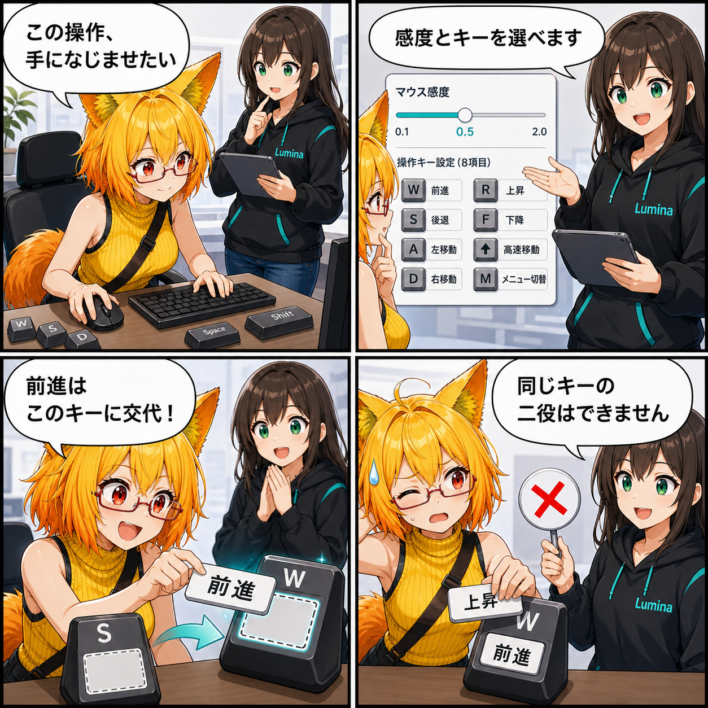

操作を手になじませる。マウス感度と移動キーを変えられるようにした日
デスクトップのマウス感度と8種類のキー割り当てを変更・保存できる操作設定を追加しました。
cbc84d9（「歩行経路編集UIの状態更新を修正」）。対象コミットは3件、集計差分は16ファイル、67,948行追加、59,989行削除でした。Viewerには未コミット差分がありますが、実装日を確定できないため実績へ含めていません。集計期間は 2026-08-22 03:00:00 JST から 2026-08-23 02:59:59 JST までです。
操作設定を、表示設定の中へ
デスクトップのカメラ操作は、視点の速さや使いやすいキー配置が人によって異なります。今回は表示設定の「操作」欄から、マウス感度を0.1〜2.0の範囲で調整し、前進・後退・左右移動・上昇・下降・高速移動・メニュー開閉の8操作へキーを割り当てられるようにしました。
変更は下書きとして扱われ、「操作設定を適用」を押すと保存されます。初期値へ戻す操作も用意しました。キーを待ち受けている間は通常のデスクトップ操作を止めるため、割り当てたいキーがカメラ移動やメニュー開閉として同時に反応しません。
重複や不正な値をそのまま通さない
同じキーを複数の操作へ割り当てようとすると、すでに使われている操作を知らせて別のキーを求めます。マウスやジョイスティック由来のキーは候補から外し、保存値の読み込み時にもキー名と感度を検証します。設定ファイルが古い場合や値が不正な場合は、安全な既定値へ戻せる構成です。
マウス感度の既定値は、従来相当の1.0より低い0.5です。速すぎるというフィードバックを反映しつつ、必要なら利用者が好みの速さへ変更できます。
同じ期間に進んだこと
歩行アニメーションでは、停止・歩行・走行のタグを移動速度から明示的に選ぶ処理を追加し、持続的な移動中の再生を安定させました。経路編集UIでは開始・終了後の表示更新、対象アバターの表示、LineRendererが破棄済み参照を保持した場合の安全な作り直しも修正しています。
また、デスクトップの6方向ビュー用ツールバーは画面右下へ移動しました。設定項目の追加と合わせ、操作に関する導線を整理した一日です。
技術的なポイント
- マウス感度を0.1〜2.0で調整し、既定値を0.5へ変更
- 前後左右・上下・高速移動・メニュー開閉の8操作を再割り当て
- キー待受中の通常操作を停止し、重複割り当てを拒否
- 変更の適用保存、初期値への復元、読み込み時の値検証を追加
- 停止・歩行・走行タグを速度に応じて選択し、持続移動の再生を安定化
補足
集計した3件のコミット全体では16ファイルが変わりました。行数の大部分はUnityが保存する大きなPrefabの更新によるものです。Viewerの未コミット差分は確認しましたが、期間内に実装された事実を確定できないため、記事と4コマには含めていません。
4コマの裏話
キー割り当てを「配役交代」に見立てました。ろひが自分の手に合う操作を選び、最後はルミナが同じキーの二役を止める流れです。設定を増やした成功だけで終わらず、重複を防ぐ実装上の制約をオチにしています。
まとめ
固定だったデスクトップ操作を、マウス感度と8種類のキー割り当てから調整・保存できるようにしました。待受中の誤操作、重複割り当て、不正な保存値にも対処し、好みの操作へ変えても安全に戻せます。
本日のひとこと： 操作の正解はひとつじゃない。でも同じキーの二役はなし。